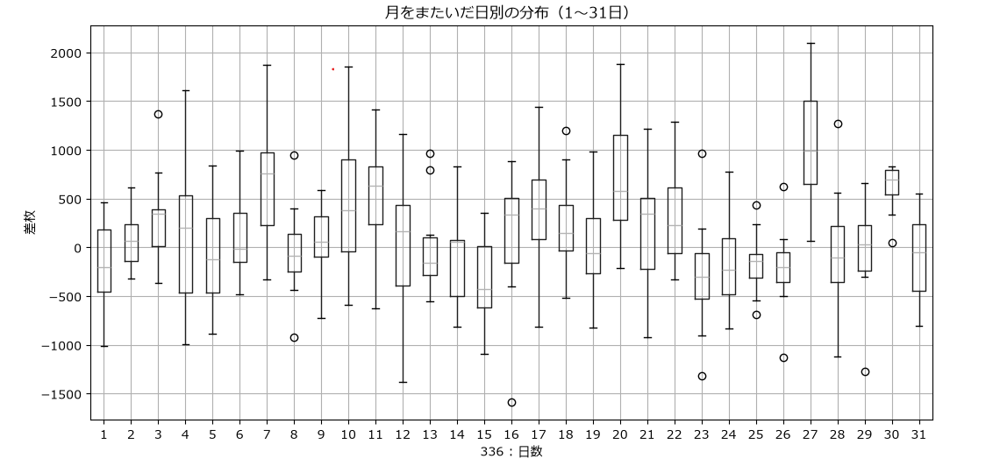
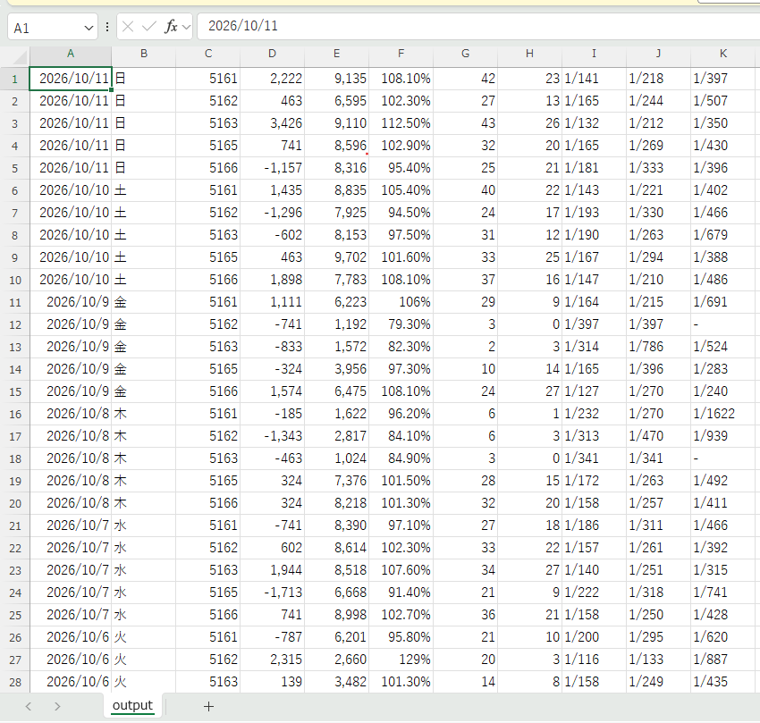

毎日ホールのデータをチェックして、エクセルにコピペしている友達を見て、
「この作業、自動化できそうだなぁ…」と思ったので、調べながら作ってみました。
その過程をここに記しておきます。
➤具体的なコード的な解説はこちら
➤使い方・ダウンロードはこちら
・使ったもの
言語：PYTHON
ライブラリ系
・スクレイプツール：undetected_chromedriver
・要素抽出：BeautifulSoup
・データベース：Sqlite3
・データ分析：pandas、matplotlib
第一章 / スクレイピング・JAVAとの別れ
「よっしゃあ作るぞ！」となって一番慣れ親しんだJAVAで開発を始めました。
最初に作るべき機能は、スクレイピングです。
ウェブサイトからHTML文を取得してくる作業のことですね。
しかし、ある程度進めたところで気づきます。
__なんか通信ブロックされてないか？__
そう、最初Seleniumというツールを使用して、スクレイピングをしていましたが、
どうやらサーバー側のBotチェックに引っかかり、データが取得できないと気付きました。(泣)
(CloudflareというBotチェックソフトらしい)
調査をしていると、PYTHONにundetected‑chromedriverというライブラリが存在することを発見。
これを使用すると、ブラウザBot判定を消せるらしい。
ので実際やってみると、データの取得に成功。
JAVAで作りたかったのですが、このライブラリがPYTHONでしかできないっぽかったので
PYTHONで開発をすることにしました。
(PYTHONの最新バージョンで動かず、いろいろ試した結果、バージョン3.11で動いた。ﾃｺｽﾞﾗｾﾔｶﾞｯﾃ)
第二章 / データ抽出
undetected‑chromedriverを使うと、その簡単さに衝撃を受けます。
PYTHONってこんなわかりやすいんだぁ...と驚いていました。
HTML文を取得できたら、次は抽出です。
chromedriverは生のHTML文を取得してくるので、
そこから欲しいデータを抽出する必要があります。
これも流石PYTHON、BeautifulSoupという便利なライブラリがあります。
生のHTML文をただの文字列としてではなく、HTMLオブジェクトの構造を扱う感覚でデータを取得できます。
たとえばこのコード、
id = [a.get("href") for a in soup.select("a")]
このコード１つで、取得したページのaタグのリンク先のURLが配列ですべて取得できます。(ﾍﾞﾝﾘｽｷﾞ)
第三章 / DB保存
次はデータ抽出したデータを、どこにどう保存するかですね。
最初はJSONでやっていましたが、暗礁に乗り上げます。
それは、保存は便利だけど、取り出すとき複雑になるということ。
目的はスロットのデータの分析ですから、
「この値がこれより大きい日をまとめたい。」、「店ごと、週ごと、月ごとに集計したい」
こうなったときに、SQLのSELECT文を使わないと、どんどん複雑になっていくんですよね。
でもローカルで使用するアプリにMySqlとかSqlServerみたいなDBもいろいろめんどくさいなぁと思っていたところ
Sqliteを発見。
MySqlやSqlServerなどに必要なインストール作業や環境設定が必要ない！
しかもこれPYTHONの標準ライブラリで、pipで取ってくる必要もないんです！(ｽｺﾞｽｷﾞ)
ただしSqlServerでいうSSMSのような、DBをGUIで管理するツールがないという欠点もあります(これあったらめっちゃ便利だと思う)
第四章 / 分析・出力
取得・抽出・保存ができたので、次はいよいよ分析です。
ここはPYTHONの得意分野、なんの苦戦もなく
箱ひげ図を作成する機能はあっという間に完成しました。
↓

エクセルで管理したい場合のために、csvファイル化する機能も搭載。
これもすぐできました。(PYTHONｽｹﾞｰ)
↓

感想
PYTHONはまじで便利
かたくなにJAVAで作ろうとしていましたが、本当に断念してよかったと思います。
こんだけいろいろな作業があっという間に作れちゃうのを体験して、
PYTHONの便利さに気づかされました。